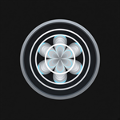
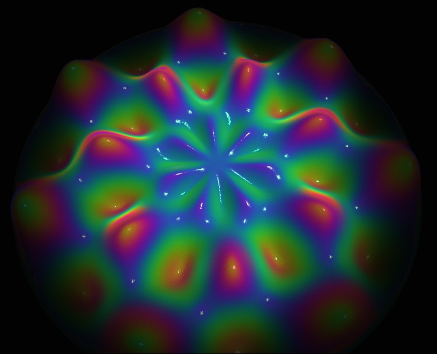
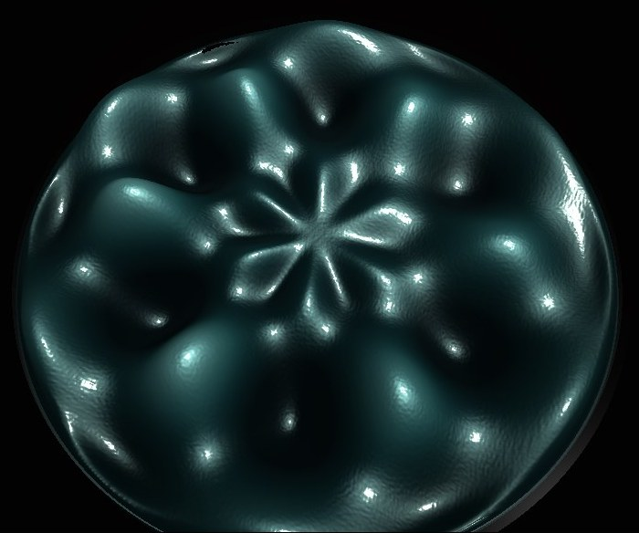
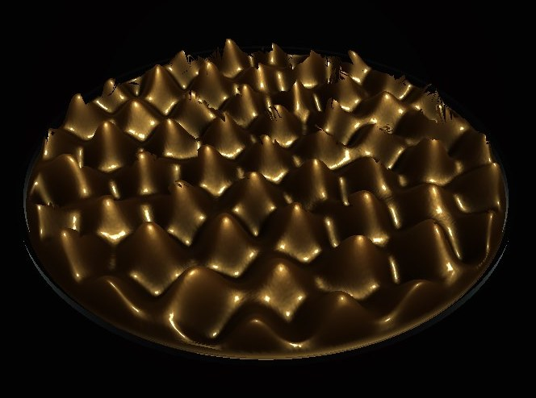
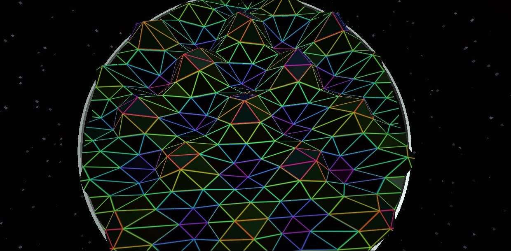
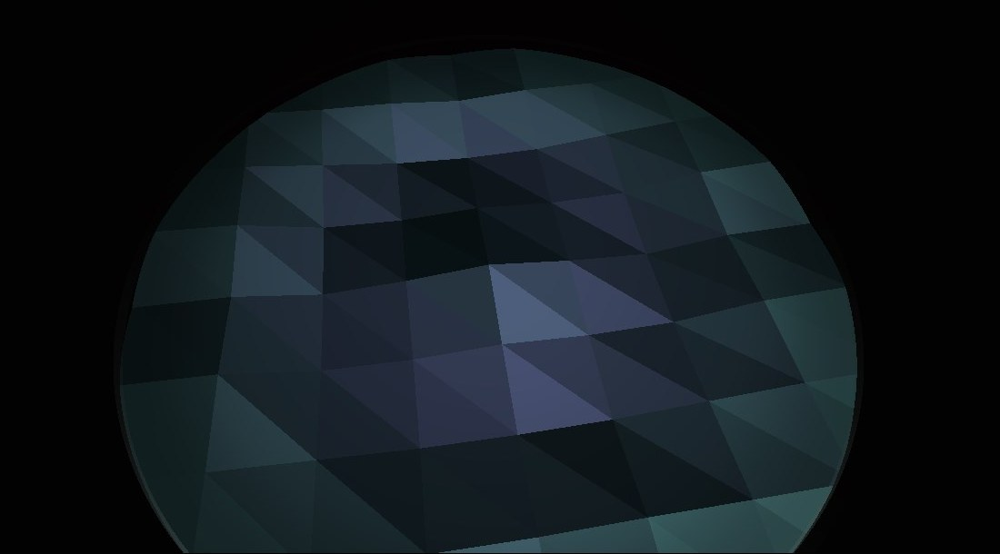

Cymatic
Cameron S Humphries
Cymatic is a Windows app by Cameron S Humphries. It shows a dish of water that locks into cymatic patterns from the sound already playing on the PC, or from a tone generated on the computer. A steady pitch locks the dish. Silence lets the water settle.
Download Cymatic on Microsoft Store




What it can do
Cymatic is a music visualiser. The picture is the water. Put sound on and the surface moves with it. Hold a note and it locks into rings, petals, and grids.
- PC sound reads the audio already playing through the speakers and follows its pitch and loudness.
- A built-in tone lets you set the pitch and the volume yourself.
- A steady pitch locks the dish. Silence lets the water settle.
- Drive, settle, wave speed, stroke, pitch follow, loudness follow, overtone, amplitude, crests, light, and ambient.
- Colours: Water, Ink, Gold, Iridescent, Galaxy, Aurora, Ember, and Blood.
- Surface: normal, low poly, wireframe, or dots.
- Perimeter: glass, a ring, a fade, or none. Radius can be changed.
- Drag to orbit, scroll to zoom, right-drag to slide. Full screen is available.
- Reset water and reset camera put the dish and the view back.
PC sound
If you choose PC sound, the app reads the audio already playing through your speakers so the dish can follow the pitch and loudness. That audio is used on this computer while the window is open. It is not recorded, not saved, and not transmitted.
Tone
The built-in tone is generated on this computer. You set the pitch and the volume. Preset pitches are 48 rings, 96 petals, 190 hex, and 420 grid.
On your PC
Cymatic runs on 64-bit Windows 10 version 2004 (build 19041) or later, including Windows 11. Sliders, colours, and the other controls are saved on this PC so they are still there the next time you open the app. They stay on this PC.
There is no account and no sign-in. Cymatic does not show ads, does not include analytics, and does not send what you do to Cameron S Humphries or to anyone else. It is sold on the Microsoft Store. Microsoft processes the payment.
FAQ
What is Cymatic?
Cymatic is a Windows app by Cameron S Humphries. It shows a dish of water that locks into cymatic patterns from the sound already playing on the PC, or from a tone generated on the computer.
What can Cymatic do?
It follows pitch and loudness from the PC speakers or from a built-in tone. A steady pitch locks the dish. Silence lets the water settle. You can set drive, settle, wave speed, stroke, overtone, amplitude, crests, light, and ambient. Colours are Water, Ink, Gold, Iridescent, Galaxy, Aurora, Ember, and Blood. The surface can be normal, low poly, wireframe, or dots. The perimeter can be glass, a ring, a fade, or none. You can orbit, zoom, slide, and use full screen.
Does Cymatic record audio from my PC?
No. If you choose PC sound, Cymatic reads the audio already playing through the speakers while the window is open. That audio is not recorded, not saved, and not transmitted.
Does Cymatic need an account?
No. There is no sign-in. Cymatic does not show ads and does not include analytics. Settings stay on the PC.
Which versions of Windows run Cymatic?
Cymatic runs on 64-bit Windows 10 version 2004 (build 19041) or later, including Windows 11.